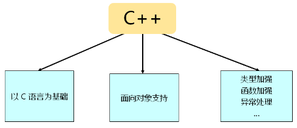

目录

面试题：int f()和int f(void)有区别吗？如果有，区别是什么？
C++对三目运算符进行了升级：
#include <stdio.h>
int main()
{
int a = 1;
int b = 2;
((a < b) ? a : b) = 3; //正确，返回a或b的引用，可以作为左值
((a < b) ? 1 : b) = 4; //错误，返回1或b的值，不能作为左值
printf("a = %d, b = %d\n", a, b);
return 0;
}#include <stdio.h>
int main()
{
/* 用字面值常量或其他const常量初始化的为const常量 */
const int A = 1;
const int B = 2;
const int C = B;
int array[A + B + C] = {0};
for (int i = 0; i < (A + B + C); i++)
{
printf("array[%d] = %d\n", i, array[i]);
}
/* 用其他变量初始化的为const只读变量 */
int x = 1;
const int rx = x;
int *prx = (int *)℞
*prx = 5;
printf("rx = %d\n", rx);
/* 被volatile修饰的为const只读变量 */
volatile const int y = 2;
int *p = (int *)&y;
*p = 6;
printf("y = %d\n", y);
return 0;
}一般情况下，C++编译器不会为const常量分配内存空间，除非遇到以下两种情况：
C++编译器虽然可能会给const常量分配内存，但这仅仅是为了兼容C语言的特性，并不会使用该存储空间中的值，使用的仍然是符号表中的值。
#include <stdio.h>
int main()
{
const int c = 0;
int *p = (int *)&c; //对const常量取地址，为const常量分配内存空间
*p = 5; //改变的是为const常量分配的内存空间
printf("c = %d\n", c); //const常量仍然使用符号表中的值
printf("*p = %d\n", *p); //这里才使用为const常量分配的内存空间中的值
return 0;
}#include <stdio.h>
int main()
{
bool b = false;
printf("sizeof(b) = %d\n", sizeof(b));
printf("b = %d\n", b);
b = 3;
printf("b = %d\n", b);
b = -5;
printf("b = %d\n", b);
b = 0;
printf("b = %d\n", b);
return 0;
}